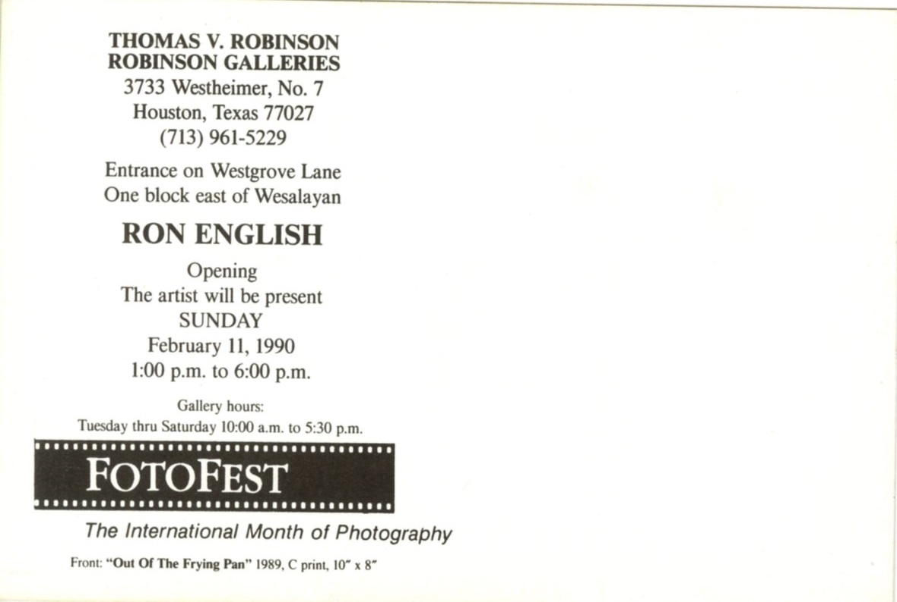
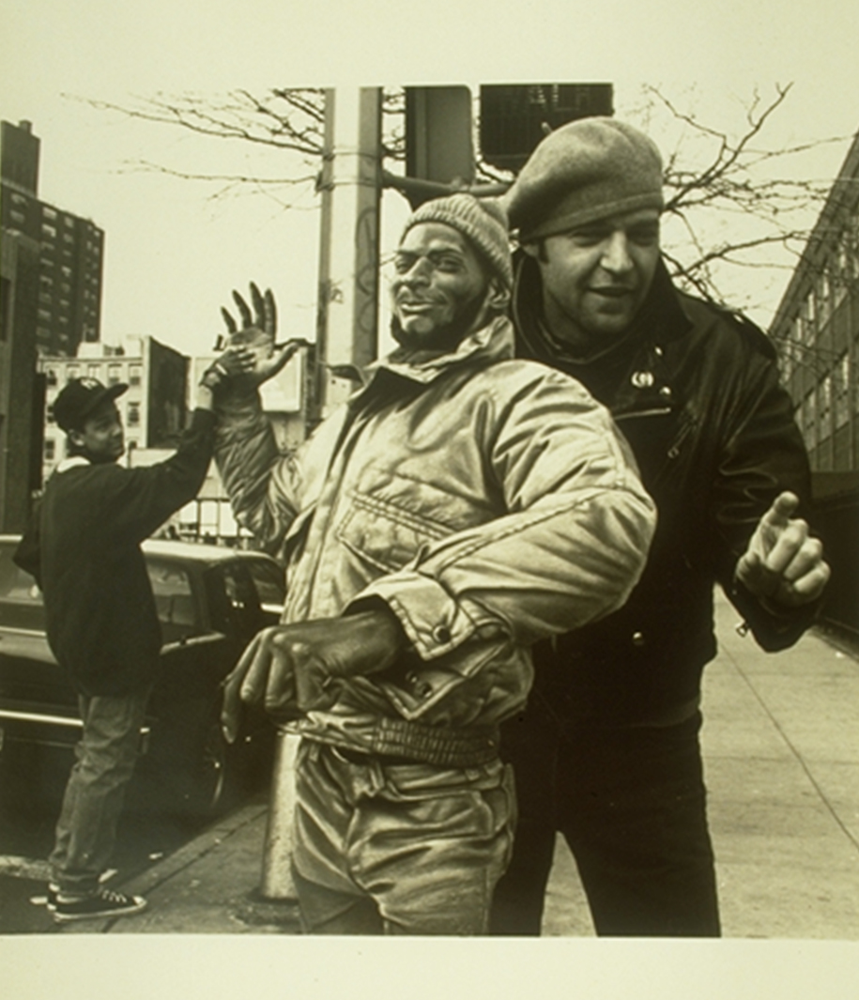
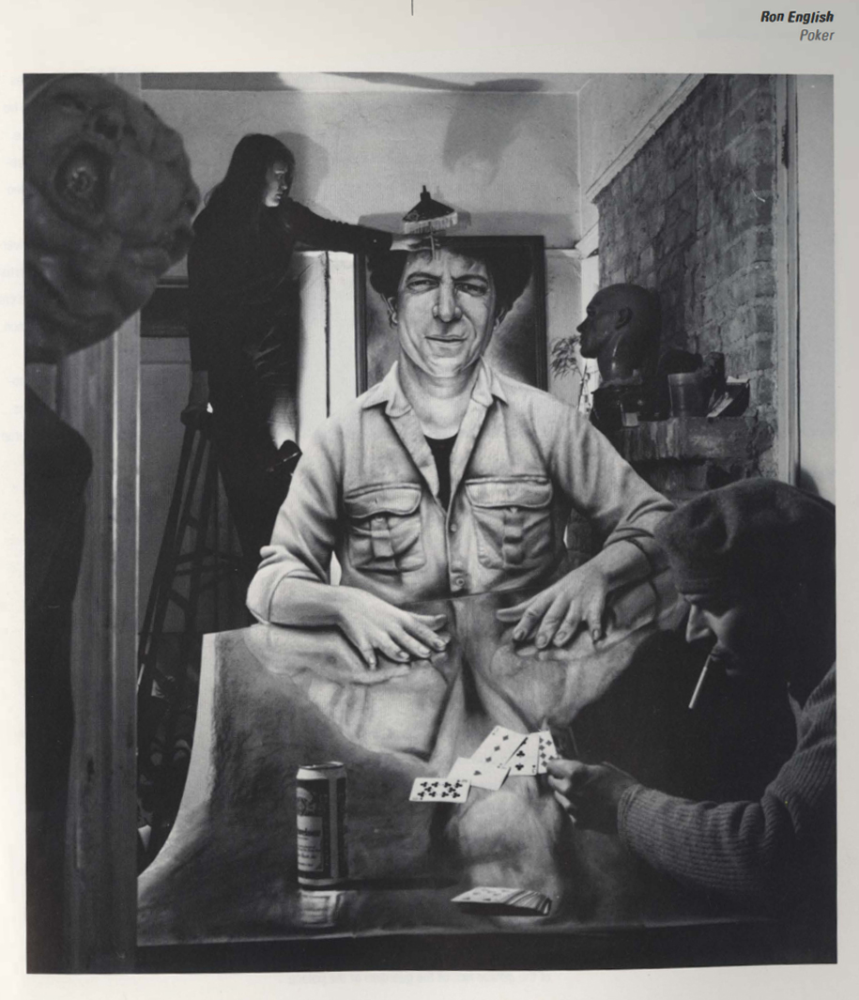

Ron English (FotoFest ’90)
Thomas V. Robinson / Robinson Galleries, Houston, Texas, 1990.




Documented Works Associated with the Exhibition
The following works are documented in connection with the exhibition; additional works may also have been included.

Poker
Documented in the FotoFest ’90 catalogue
Out of the Frying Pan
1989; reproduced on the front of the showcard and in The Houston Post
High Five Three
Reproduced in Houston: The Magazine for Business, February 1990
Notes
The exhibition was presented at Thomas V. Robinson / Robinson Galleries in Houston as part of FotoFest ’90, described in the festival materials as “The International Month of Photography.”
The FotoFest ’90 catalogue states that the month-long biennial festival ran from February 10 to March 10 and hosted more than ninety exhibitions from two dozen countries.
In the catalogue entry titled Vicissitudes, Ron English is described as working at the forefront of a fabricated-to-be-photographed approach, using photography to record rearrangements of reality through interventions such as painted billboards and hand-painted anamorphic cardboard figures.
The same catalogue text notes prior exhibitions in Houston, Dallas, New York, and Amsterdam, and states that his work was held in collections including the Museum of Contemporary Art in Paris and the Whitney Museum in New York.
Margaret Daugherty’s “For art’s sake,” published in Houston: The Magazine for Business, describes English’s photographs as merging actual persons and places, his own hand-drawn cardboard figures, and a flattening of space. The article also notes the inclusion of American Sideshows.
The front of the surviving showcard reproduces Out of the Frying Pan, while the FotoFest ’90 catalogue documents Poker, and contemporaneous magazine coverage reproduces High Five Three.
Sources
- Robinson Galleries exhibition announcement for Ron English, Thomas V. Robinson / Robinson Galleries, Houston, opening February 11, 1990.
- FotoFest ’90 catalogue, Houston, entry for Vicissitudes, Ron English.
- Margaret Daugherty, “For art’s sake,” Houston: The Magazine for Business, February 1990, p. 33.
- The Houston Post, February 4, 1990, p. H-17, listing for Ron English’s Out of the Frying Pan at Robinson Galleries.